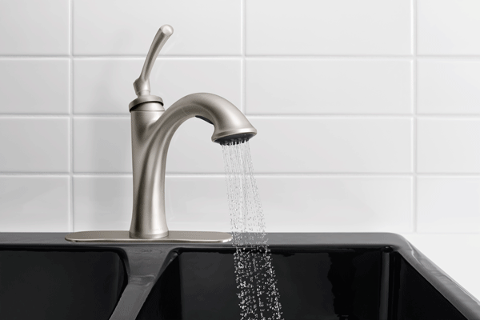
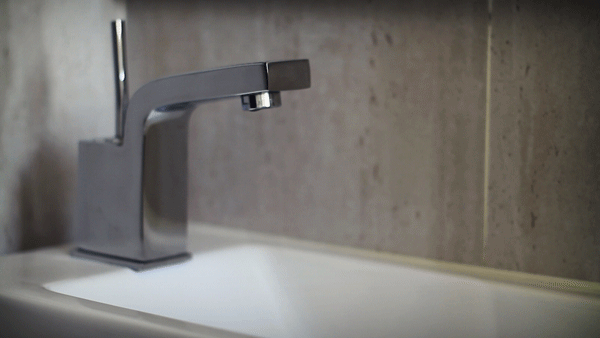
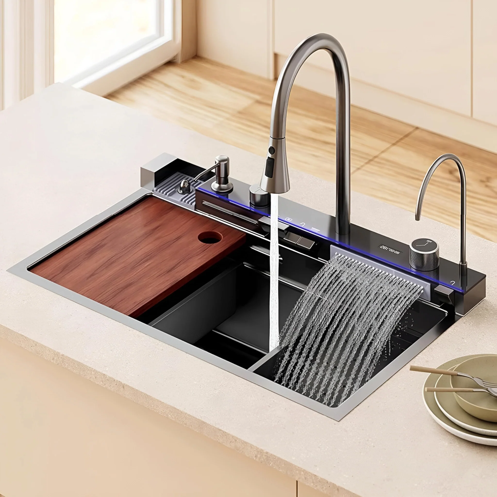
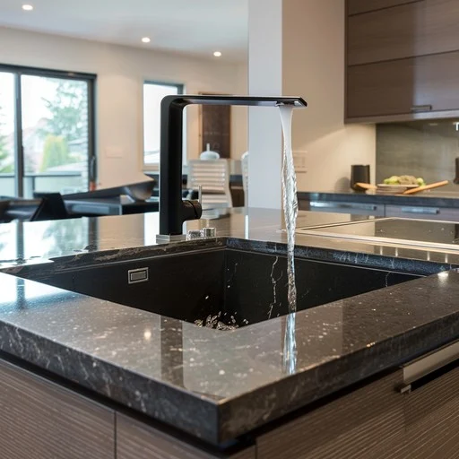
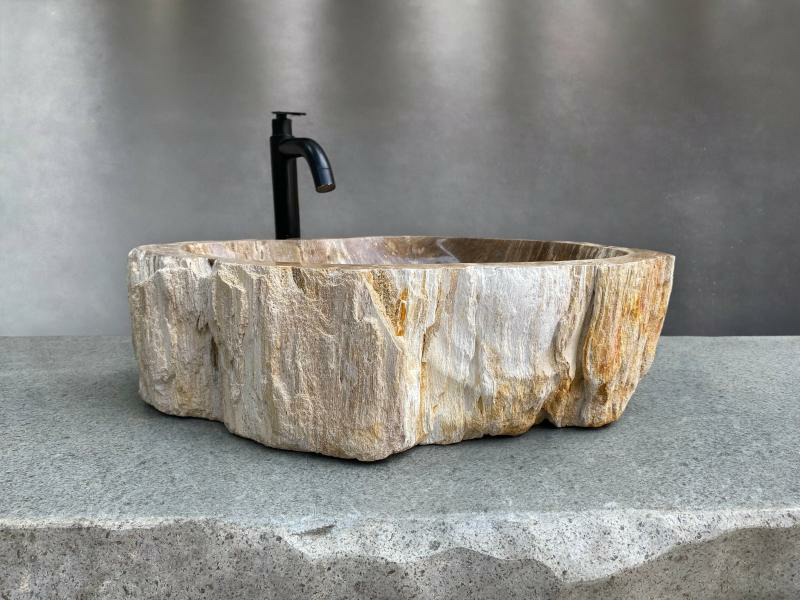

YR
plumbing
Pioneering the future of fluid delivery systems. We integrate advanced sensory arrays with high-performance alloys for zero-failure plumbing infrastructure.

Precision Sinks
Automated touch-free interfaces paired with aerospace-grade filtration. Designed for absolute hygiene and minimalist aesthetic integration.

Smart Networks
Intelligent piping systems utilizing real-time pressure telemetry to prevent leaks before they occur. High-performance alloy construction for lifetime durability.

Zero-Tolerance Engineering
Standard Operations: Absolute Precision
Fluid Mastery
Computational flow dynamics applied to every installation for perfect pressure.
Laser Alignment
Automated structural leveling ensures perfectly parallel piping systems.
Active Monitoring
Integrated cloud-based diagnostics for 24/7 health reporting.
Thermal Control
Thermodynamic modeling ensures high-efficiency heat exchange for instant delivery and energy conservation. We architect thermal fluid pathways.

Advanced Extraction
Proprietary SilentFlow acoustic engineering reduces drainage vibration. High-capacity through-put ensures your infrastructure handles peak loads.
